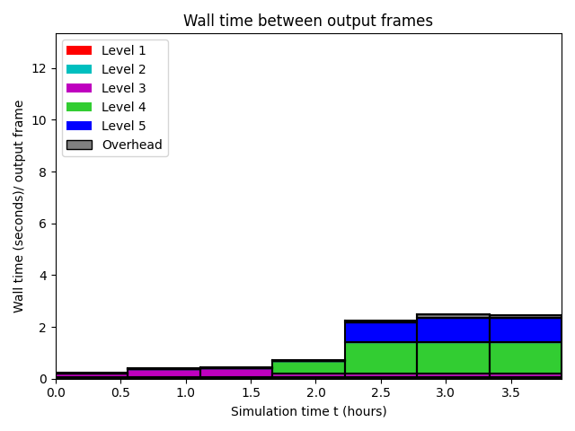

Datetime: 2024-08-25 15:15 From: /Users/rjl/clawpack_src/clawpack_master/geoclaw/examples/tsunami/radial-ocean-island-fgmax/_output
============================== Timing Data ==============================
Integration Time (stepgrid + BC + overhead)
Level Wall Time (seconds) CPU Time (seconds) Total Cell Updates
1 0.052 0.055 0.912E+05
2 0.304 0.698 0.104E+07
3 1.395 4.640 0.677E+07
4 4.154 21.347 0.336E+08
5 2.651 11.552 0.167E+08
total 8.556 38.292 0.581E+08
All levels:
stepgrid 8.266 37.541
BC/ghost cells 0.253 0.702
Regridding 0.279 0.745
Output (valout) 0.009 0.009
Total time: 8.974 39.249
Using 6 thread(s)
Note: The CPU times are summed over all threads.
Total time includes more than the subroutines listed above
Note: timings are also recorded for each output step
in the file timing.csv.
clock_rate = 1000000000 per second, count_max = 9223372036854775807
clock_start = 1724438377838072000, clock_finish = 1724438386834173000
=========================================================================
